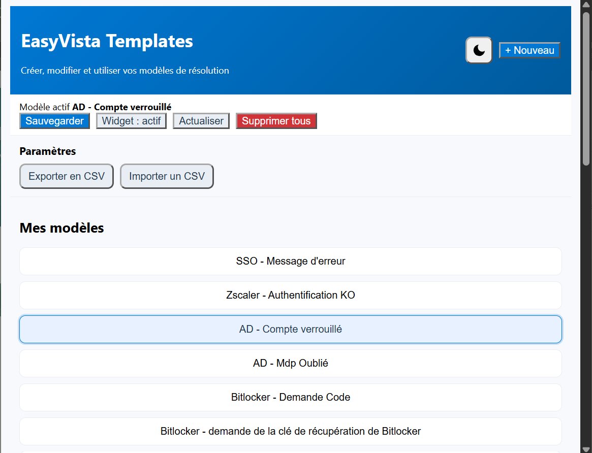
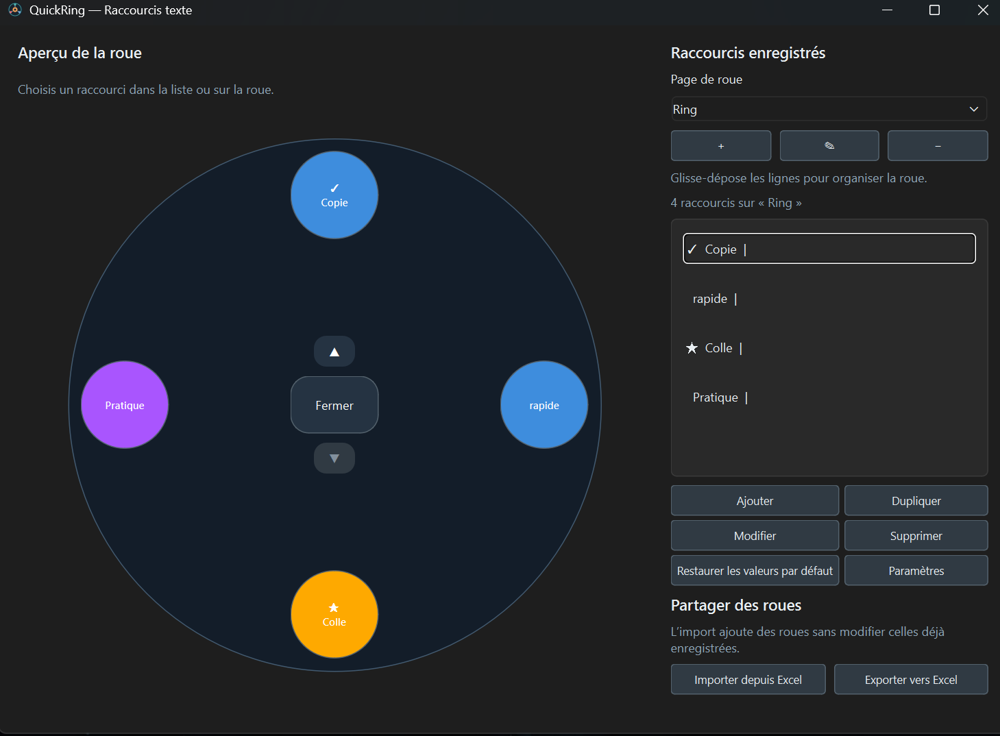
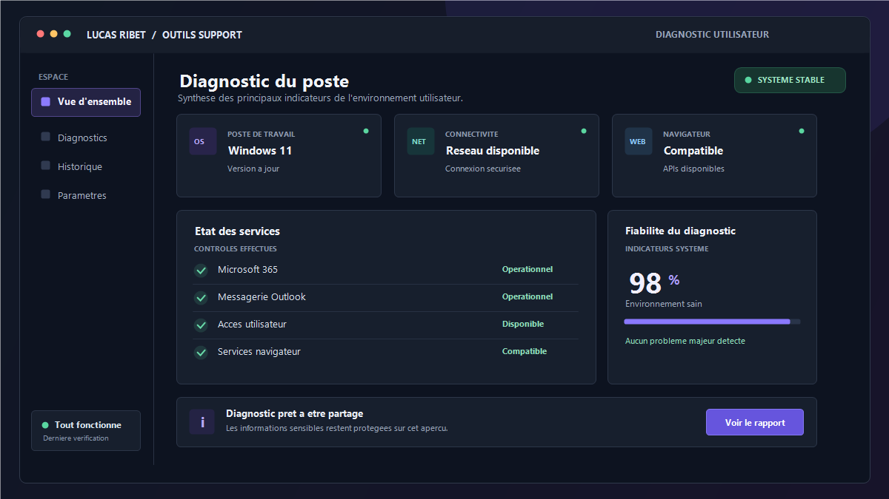
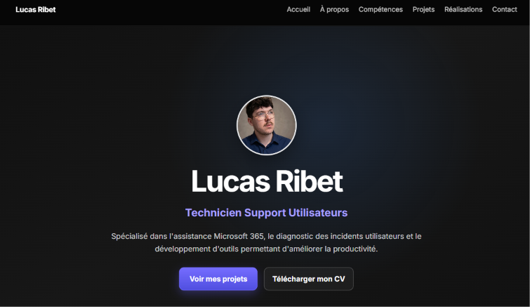

Lucas Ribet
Technicien Support Utilisateurs
Spécialisé dans l'assistance Microsoft 365, le diagnostic des incidents utilisateurs et le développement d'outils permettant d'améliorer la productivité.
À propos
Mon quotidien
Technicien Support Utilisateurs.
J'interviens quotidiennement sur les incidents Microsoft 365, Outlook, Exchange Online, la gestion des accès, les problèmes de messagerie et l'accompagnement des utilisateurs.
En parallèle, je développe des outils et automatisations permettant de simplifier certaines tâches récurrentes du support informatique.
Compétences
Microsoft 365
Environnement Microsoft
Développement
Projets personnels
Des outils simples autour du diagnostic et de la compatibilité web.
Scanner système navigateur
Outil permettant d'afficher certaines informations accessibles depuis les API Web du navigateur.
Il met en évidence les limites des informations disponibles côté client et permet l'export des résultats au format JSON.
- HTML
- CSS
- JavaScript
- Web APIs
Vérificateur de compatibilité navigateur
Outil permettant de vérifier la disponibilité de différentes API Web selon le navigateur utilisé.
Il peut être utilisé dans un contexte de diagnostic ou de validation d'applications web.
- HTML
- CSS
- JavaScript
Réalisations personnelles

Extension Chrome pour le ticketing
Développement d'une extension Chrome facilitant l'utilisation d'un outil de ticketing.
- Chrome
- Ticketing

Outils internes
Création d'outils internes permettant d'accélérer certaines actions répétitives.
- Automatisation
- Support informatique

Outils de diagnostic utilisateur
Développement de plusieurs outils JavaScript orientés diagnostic utilisateur.
- JavaScript
- HTML
- CSS
- Web APIs

Portfolio personnel
Création et maintenance d'un portfolio personnel hébergé sur GitHub Pages.
- HTML
- CSS
- JavaScript
- GitHub Pages
Contact
Pour échanger autour d'une opportunité ou d'un projet, vous pouvez me contacter.
E-mail : ribelucas@hotmail.com
LinkedIn : linkedin.com/in/lucas-ribet